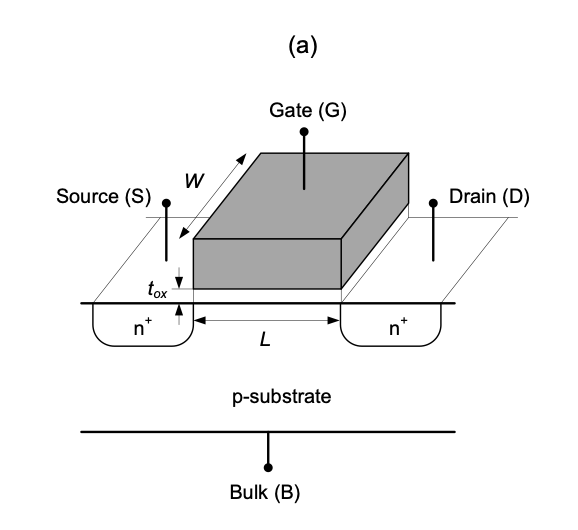
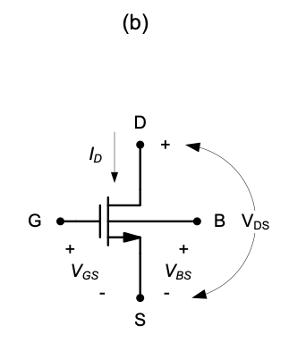
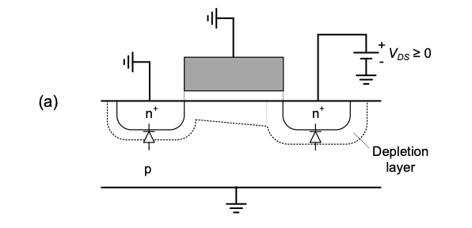
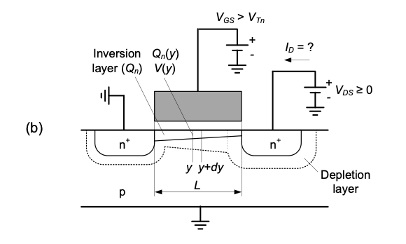

Introduction
With the development of the integrated circuit, the semiconductor industry is undoubtedly the most influential industry to appear in our society. Its impact on almost every person in the world exceeds that of any other industry since the beginning of the Industrial Revolution. The reasons for its success are as follows:
- Review the MOSFET device structure and basic operation as described by the square-law model.
- Introduce large- and small-signal analysis tech- niques using the common-source voltage ampli- fier as a motivating example.
- Derive a small-signal model for the MOSFET device, consisting of a transconductance and out- put resistance element.
- Provide a feel for potential inaccuracies and range limitations of simple modeling expressions.
2-1 First-Order MOSFET Model
The device-level derivations of this section assume familiarity with basic solid-state physics and electro- statics. For a ground-up treatment from first princi- ples, the reader is referred to introductory solid-state device material (see Reference 1).
2-1-1 Derivation of I-V Characteristics
The basic structure of an enhancement mode n-channel MOSFET is shown in ?@fig-2.1. It consists of a lightly doped p-substrate (bulk), two heavily doped n-type regions (source and drain) and a conductive gate electrode that is isolated from the substrate using a thin silicon dioxide layer of thick- ness tox. Other important geometry parameters of this device include the channel length L (distance between the source and drain) and the channel width W.
As we shall see, the name “n-channel” stems from the fact that this device conducts current by forming an n-type layer underneath the gate. A p-channel device can be constructed similarly using an n-type bulk and p-type source/drain regions. The differentiating details between n- and p-channel devices are summarized in Section-2-1-2. For the time being, we will use the n-channel device to dis- cuss the basic principles.


In order to study the electrical behavior of a MOSFET, it is useful to define a schematic symbol and conventions for electrical variables as shown in Figure 2.
The variables \(V_{GS}\), \(V_{DS}\), and \(V_{BS}\) describe the voltages between the respective terminals using the commonly used ordered subscript convention \(V_{XY}\) = \(V_{X}\) – \(V_{Y}\). The current flowing into the drain node is labeled \(I_{D}\).
It is important to note that the MOSFET device considered here is perfectly symmetric; i.e., the drain and source terminal labels can be interchanged. It is a common convention to assign the source to the lower potential of these two terminals, since this terminal is the source of electrons that enable the flow of current. We will see later that this convention, together with the arrow that marks the source (and the direction of current flow), provides useful intuition when reading a larger circuit schematic.
We now begin our analysis of the MOSFET device by considering the condition shown in Figure 2-2(a), where the bulk and source are connected to a reference potential (GND), \(V_{GS}\) = 0V and \(V_{DS}\) = 0 V. Under this condition, the drain and source terminals are isolated by two reverse-biased pn-junctions and their depletion regions, which prevent any significant flow of current. Applying a positive voltage at the drain (\(V_{DS}\) > 0V) increases the reverse-bias at the drain-bulk junction and will only increase the width of the depletion region at the drain, while \(I_{D}\) = 0 is still maintained (to first-order).
Consider now \(V_{GS}\) = 0 as shown in Figure 2-2(b). This positive voltage at the gate attracts electrons from the source. With increasing \(V_{GS}\), a larger amount of electrons is supplied by the source, and ultimately, a so-called inversion layer forms underneath the gate. The voltage \(V_{GS}\) at which a significant number of mobile electrons underneath the gate become available is called the threshold voltage of the transistor, or \(V_{t}\). In order to differentiate the threshold voltages and other device parameters of n-and p-channel devices, we will utilize the subscripts n and p throughout this module. E.g., we denote the threshold voltage for n-channels and p-channels as \(V_{Tn}\) and \(V_{Tp}\)., respectively.


With the inversion layer under the gate, the drain and source regions are now “connected” through a conductive path and any voltage between these terminals (\(V_{GS}\) > 0) will result in a flow of drain current. How can we calculate this current? In order to answer this question, the following approximations are useful:
1. The current primarily depends on the number of mobile electrons in the channel times their velocity.
2. The number of mobile electrons in the channel is set by the vertical electric field from the gate to the conductive channel (gradual channel approximation).
3. The threshold voltage is constant along the channel; this assumption neglects the so-called body effect.
4. The velocity of the electrons traveling from the source to the drain is proportional to the lateral electric field in the channel.
Figure 4 establishes relevant variables for further analysis. The auxiliary variable y ranges from 0 to L and is used to express electrical quantities as a function of the distance from the source. The inversion layer charge density (per unit area) and voltage at position y in the channel are denoted as \(Q_{n}(y)\) and \(V_{y}\), respectively. With these conventions in place, we can translate the above-listed assumptions into the following equations: